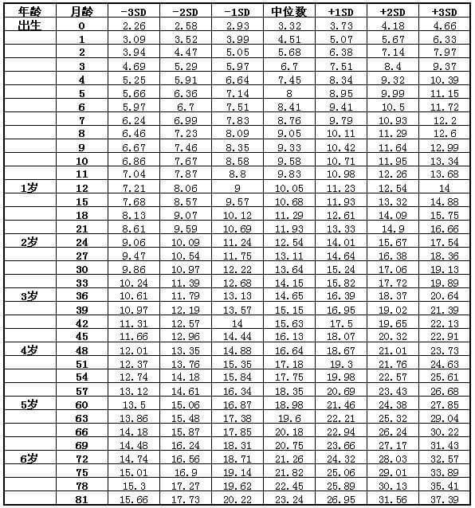
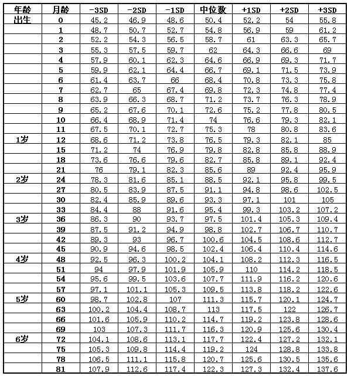
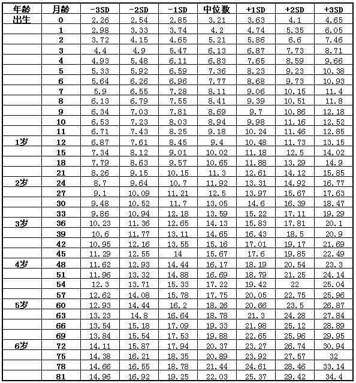
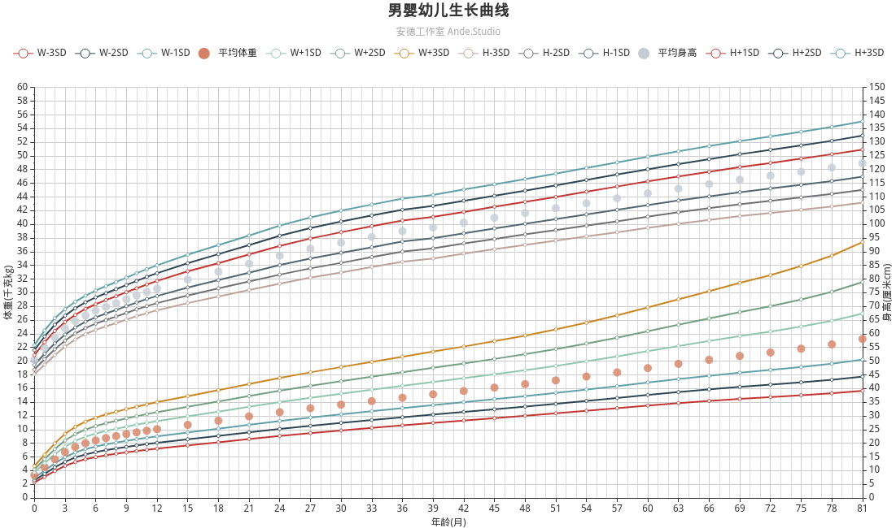
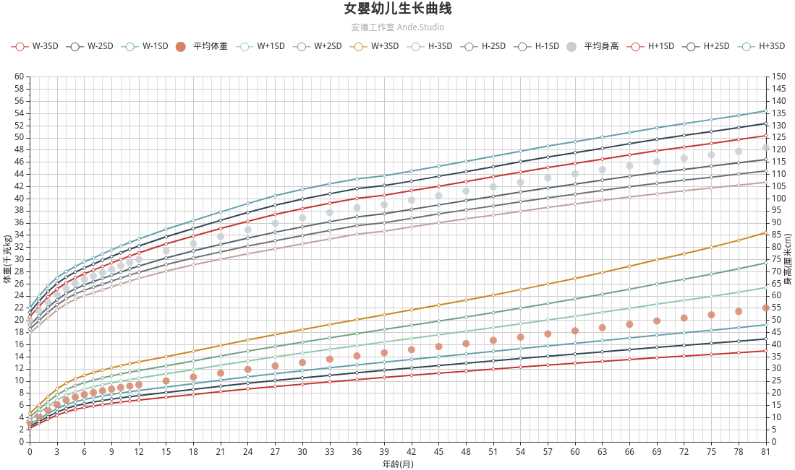
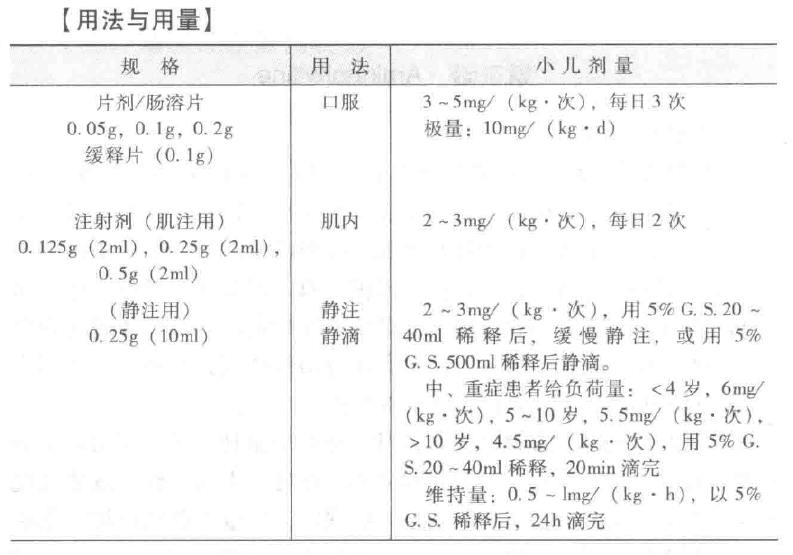
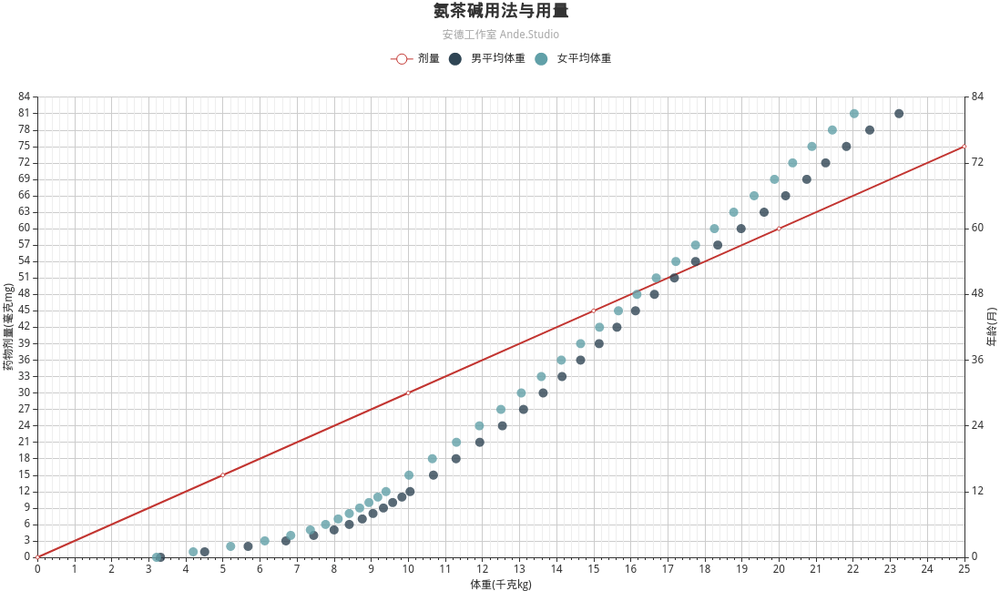

原起
- 临床实践中，一般用体重换算药物剂量。在审方的过程中，经常需要参考体重数据。
- 在学习《儿科学》的过程中，我了解到生长曲线在体格评价的作用。
- 既然我们是儿童医院，一方面有临床的需要，另一方面负责保健的工作，那么不开发一个生长曲线的工具呢？
- 在临床药学的培训时，我想到可以开发一个用生长曲线自动计算药物剂量的工具。如果处方系统能调用这一工具，那对合理用药将有极大的助益。
- 眼下正在做的处方集，当然也可以调用这一工具。
- 暂不考虑太久远的事情，如何实现数据的可视化才是当下要解决的问题。
- 涉及移植和集成，不打算使用办公软件。用Python当然最快速，但要医生普及Python还是不现实。
- 最终决定用JavaScript，使用echartsjs。选择echartsjs其实很简单，因其文档是中文学习成本低，且案例丰富。
- 为了”合理用药”去学JavaScript数据可视化？当然太虚无缥缈。
- 但一想到金融数据的可视化能够带来的真金白银，瞬间就有动力了。
数据
要找一份直接可用的数据并不容易，最后我选择了最笨的办法——自己动手。当然我不会傻到一个一个的手敲，而是找了4张图片做光学识别。所幸辨认度高，适当修正就得到了。
我得到的数据有两个问题：一是我无法数据来源真实可靠，二是只包含了0到6岁的数据。拿来练手是没有问题，但如果用来指导临床还是得解决前面的问题才是。
男婴幼儿体重表

男婴幼儿身高表

女婴幼儿体重表

女婴幼儿身高表
可视化
其实就是看文档，修改示例，Debug的循环。我并不熟悉JavaScript，磕磕碰碰，其中艰辛，外人可能无法体会。但当我终于调试出了我想要的东西，那是一种付出和收获的坦然。我知道我基本上学会了如何用JavaScript的数据可视化。
男婴幼儿生长曲线

女婴幼儿生长曲线

以保健为中心
我想起了医院“以保健为中心”的服务方针，我觉得这是妇保院该有的定位。因为在临床方面，妇保院无法和人民医院或中医院竞争。我曾参与过幼儿园的体检，负责的就是身高和体重的测量。现在想来，如果在报告上评估身体质量指数 (BMI)，并绘制生长曲线，那么这项工作会更有意义。不仅仅是幼儿体检，其实可以往前追溯到产检，用生长曲线评估孕程。这样就能打通妇女和儿童保健，从而实现连续性。更进一步的，不仅仅是身高和体重，其他数据也可以考虑可视化。这样下来妇保院将会在保健工作中脱颖而出。
数据共享
在卫生院，我参与过公共卫生的考核工作。健康扶贫出发很美好，但落到实处感觉并不美妙。很多工作流于形式，其中让我感触最深的还是健康档案，一方面数据真实性堪忧，另一方面数据并没有得到有效的利用。这让我想到了数据共享的问题：如何让原始数据方便快捷的传入公卫系统，如何让人获得清晰明了的数据视图。当前采用的先建纸档，再由纸档录电子档，这当然是低效的做法。数据应该在一手的时候就直接传入系统，也就是说很多测量仪器应该开发数据接口。试想一下，身高、体重、血压、血糖……可以直接传到计算机，这可以舍下多少录入的工作和纸张。
药学工具
我可能无法实现上面的设想，但最起码的我可以在我的本职工作中进行尝试。我希望实现一个可以根据体重或年龄算出药物用量的应用，实际上，如果有数据支撑，这是可以办到的。下面是一种简单实现：
在《实用儿科药物剂量速查手册 第5版》关于氨茶碱的用法用量：

从上可以看出用量跟体重成线性关系，为简便计取y=3x，将这条线和生长曲线相关后得到如下视图：

在临床中，如果只有年龄信息(大多数门诊患者是这种情况)，那么可以生长曲线得到体重的数据，而得出参考药物用量。而如果能得到确切的体重数据(住院患者)，那么可以直接用体重计算出药物用量。
生成用量参考图表只是比较初级的玩法。如果可以将这种工具整合进处方系统，那么医生那里可以根据参考开具处方。而如果审方系统集成了这种工具，药师就能将剂量偏低和偏高的处方筛选出来，做进一步审核。